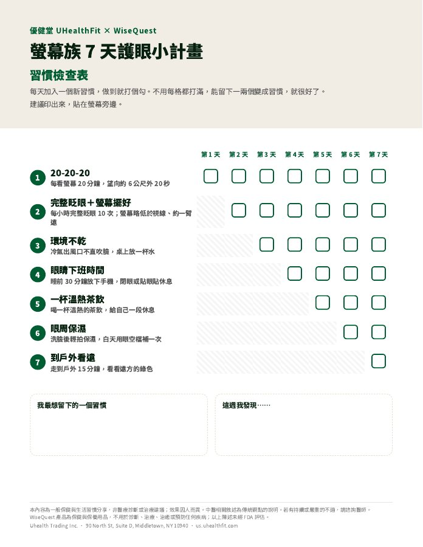

免費下載 · 7 天護眼小計畫
盯了一整天螢幕？給眼睛 7 個小習慣
一天一件小事，每件不到 5 分鐘、不花錢。留下 Email，馬上下載可列印的 7 天檢查表，貼在螢幕旁邊，每做到一項就打個勾。
✓ 已收到你的 Email！點這裡下載 PDF →
- 完全免費
- 不用買任何東西
- 隨時可取消訂閱

先看看內容
7 天，每天只做一件小事
不用一次改變生活。每個習慣都小到今天就能開始。
- 第 1 天20-20-20每看螢幕 20 分鐘，望向約 6 公尺外 20 秒。
- 第 2 天完整眨眼＋螢幕擺好每小時完整眨眼 10 次；螢幕略低於視線、約一臂遠。
- 第 3 天環境不乾冷氣出風口不直吹臉，桌上放一杯水。
- 第 4 天眼睛下班時間睡前 30 分鐘放下手機，閉眼或貼眼貼休息。
- 第 5 天一杯溫熱茶飲喝一杯溫熱的茶飲，給自己一段休息。
- 第 6 天眼周保濕洗臉後輕拍保濕，白天用眼空檔補一次。
- 第 7 天到戶外看遠走到戶外 15 分鐘，看看遠方的綠色。
- 第 8 天起挑 2–3 個最容易的，留下來變成日常。免費領取 →
你會收到
下載就能用
- 7 天打勾表一頁就好，印出來貼在螢幕旁，每做到一項就打個勾。
- 每個習慣怎麼做第 2 頁逐條說明做法和小訣竅，不用另外查。
- 做完可以重來7 天做完，下週再印一張；習慣是一遍一遍練出來的。
適合誰
如果你是……
- 每天看螢幕超過 6 小時
- 長時間待在冷氣房
- 戴隱形眼鏡
- 下班後還在滑手機

關於優健堂
只講日常做得到的事
優健堂 UHealthFit 是 WiseQuest 草本養護系列的美國中文站。WiseQuest 的配方由黃醫師研發：中國中西醫結合執業醫師、中醫全科醫師，有二十年臨床經驗。
這份《7 天護眼小計畫》依照我們的內容原則整理：只講日常做得到的小事，不誇大、不製造焦慮，也不取代醫療。
認識黃醫師 →
常見問題
領取前想先知道的事
真的免費嗎？需要買東西嗎？
完全免費，不需要購買任何產品。7 個習慣都是日常就能做到的小事，不花錢。
之後會收到 Email 嗎？
偶爾會收到優健堂的健康養護內容與會員消息。每封信底部都可以一鍵取消訂閱。
這能取代看眼科嗎？
不能。這份計畫整理的是日常作息的小習慣，不是醫療建議。如果眼睛的不適持續或加重，請直接找眼科醫師。
戴隱形眼鏡也適用嗎？
適用。第 3 天的「環境不乾」和第 4 天的「眼睛下班時間」對長時間配戴的人特別實用；配戴與清潔方式請依你的眼科醫師或驗光師指示。
PDF 怎麼下載？
送出 Email 後，頁面會立即出現下載連結，手機或電腦都能開啟；用 Letter 或 A4 紙列印都可以。